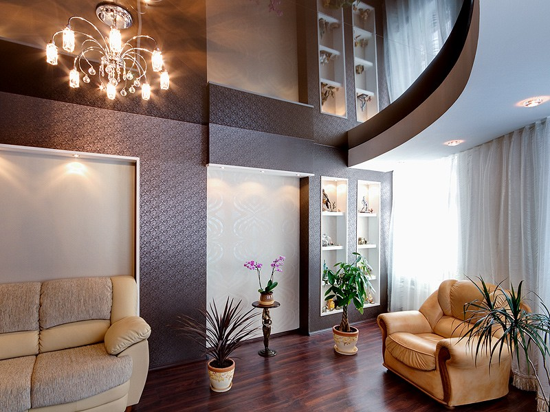
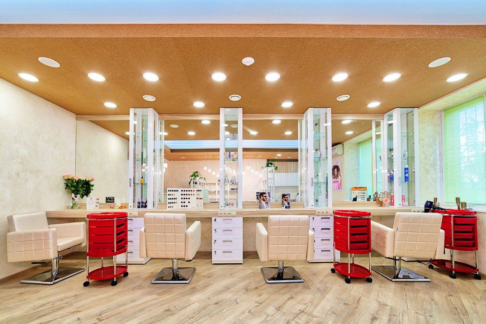
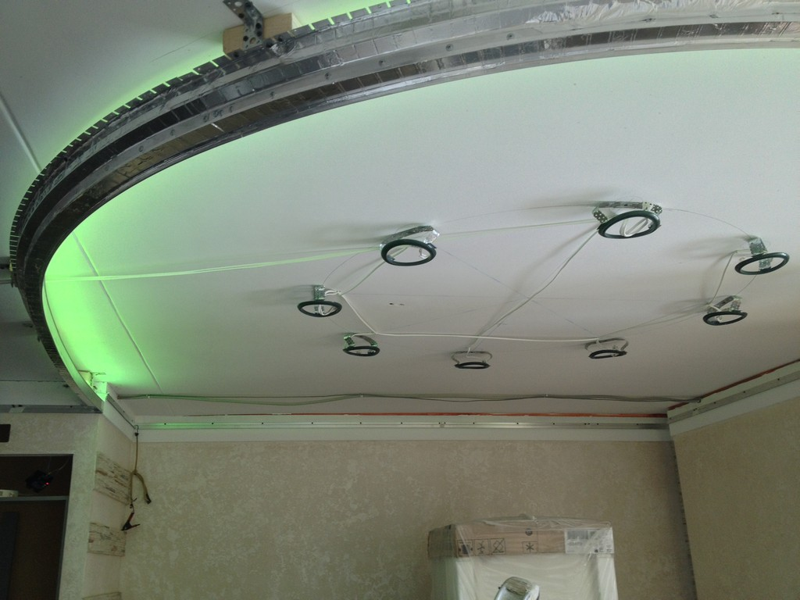
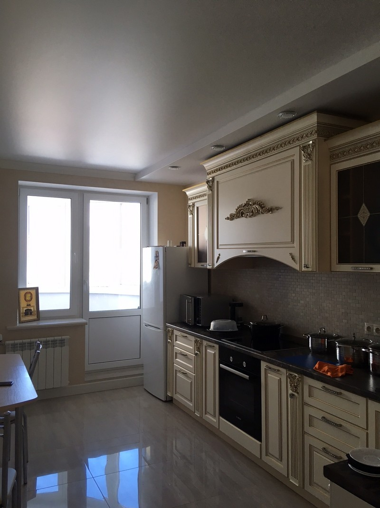

01 / ПАРЯЩИЕ ПОТОЛКИ
Свет, который меняет пространство
Мягкий свет по периметру отделяет потолок от стен и подчёркивает геометрию комнаты.
- Подсветка по периметру
- Мягкий вечерний свет
- Профиль со светодиодной лентой
НАТЯЖНЫЕ ПОТОЛКИ И ОСВЕЩЕНИЕ
Потолок и освещение, продуманные вместе с вашим интерьером
Тольятти · Самара · Сызрань
Подсветка по периметру
01 / ПАРЯЩИЕ ПОТОЛКИ
Мягкий свет по периметру отделяет потолок от стен и подчёркивает геометрию комнаты.

02 / НАТЯЖНЫЕ ПОТОЛКИ
Матовые, сатиновые и глянцевые поверхности. Спокойный фон для интерьера или его выразительный акцент.

03 / СВЕТОВЫЕ ПОТОЛКИ
Свет за полупрозрачным полотном создаёт светящуюся поверхность — целиком или в отдельной части потолка.
Несколько уровней, изгибы, арки и объёмные конструкции — когда потолок становится частью архитектуры.
Изображения, цветовые сочетания и декоративные поверхности для индивидуального решения.
Съёмные кассеты с натяжной плёнкой для помещений, где нужен доступ к коммуникациям за потолком.

Профиль, полотно, свет и примыкания работают вместе. Важно заранее учесть расположение светильников, ниш и коммуникаций.
Что продумать до монтажаПлан, фотографии, пожелания к потолку и освещению. Определяем, какое решение подходит вашему пространству.
Замеряем помещение, выбираем фактуру, согласуем светильники, ниши и конструкцию.
Фиксируем состав работ, стоимость и условия в договоре. Готовим полотно к монтажу.
Монтируем согласованное решение и рассказываем об эксплуатации и уходе.

Подготовка
Что согласовать до приезда монтажников: геометрию комнаты, светильники и доступ к месту работы.
Выбор решения
Три разных характера поверхности — и три способа взаимодействовать со светом.
Освещение
Расположение света влияет на конструкцию потолка. Начните с того, как вы пользуетесь комнатой.
Расскажите, какой потолок вы представляете. Начнём с задачи, света и деталей интерьера.